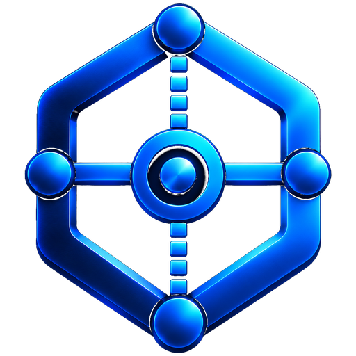

Bring your tools into view.
Agent dashboards, local services and provider information, together in a browser workspace you control.

Your tools, within reach.
Move between harnesses and dashboards in persistent browser tabs. Open services separately when embedding is unavailable.
Read the workspace guideGet arnés
Node.js 22 required. Source package, not a standalone executable. Configure services and credentials separately.